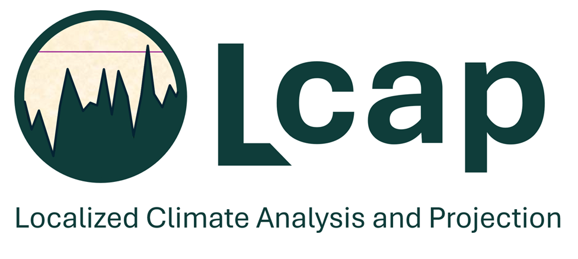
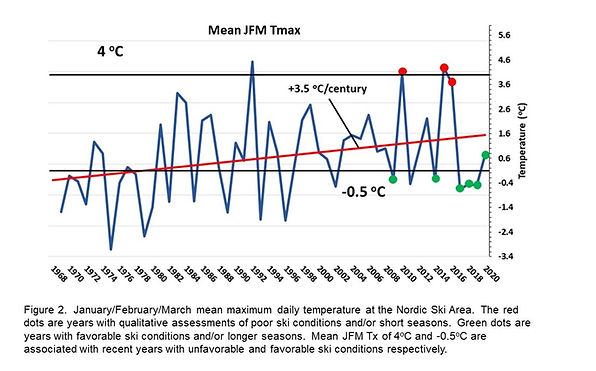
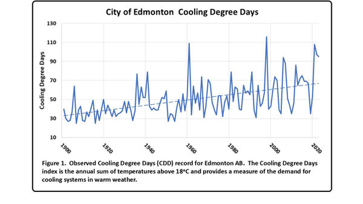
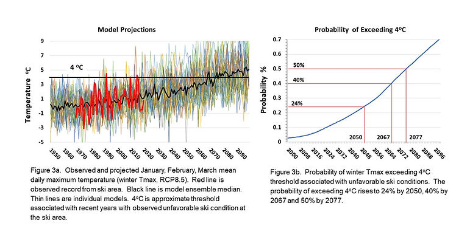

Climate Projections
Detailed climate histories and localised model projections for long-horizon planning.
West Kootenay, British Columbia
Climatic Resources Consulting provides climate change expertise for resilience planning and asset management, combining scientific rigor with practical guidance for engineers, communities, and infrastructure leaders.

LCap, CRC's Localised Climate Analysis and Projections platform, supports probability-based planning for site-specific operations and infrastructure.
What We Do
Based in the West Kootenay region of British Columbia, Climatic Resources Consulting (CRC) is a data-driven, climate resilience software and consulting company. We provide leading edge climate projections and quantitative risk analysis that facilitate the prioritisation of climate risks within asset management structures.
The approach and related software, Localised Climate Analysis and Projections (LCap), uses statistical downscaling and probabilistic analysis to generate site-specific climate projections. LCap enables planners and engineers to use a probability-based approach to undertake targeted climate change planning for specific community operations and infrastructure.
Detailed climate histories and localised model projections for long-horizon planning.
Threshold exceedance probabilities for climate-sensitive infrastructure and services.
Decision-ready climate data integrated into resilience and capital planning workflows.
Case Studies

CRC developed the LCap software package to support probability-based climate change planning for community operations and infrastructure.

Assessment of future cooling cost exposure using probability of exceeding budgetary thresholds under changing climate conditions.

100-year climate history and 21st-century projections with operational threshold probabilities for BC recreation planning.
About
Since CRC's inception, the company has focused on providing communities and organisations with detailed climate histories and localized climate model projections, while facilitating planning through quantitative assessment of critical threshold exceedance for infrastructure and operations.
Mel Reasoner's work bridges deep climate science and practical implementation, grounded in the realities of rural BC and the needs of engineers and asset managers making long-term decisions under uncertainty.
Contact
Climatic Resources Consulting
722 Third St.
Nelson, BC V1L 2R2 Canada